Xubuntu
Archivierte Anleitung
Dieser Artikel wurde archiviert, da er - oder Teile daraus - nur noch unter einer älteren Ubuntu-Version nutzbar ist. Diese Anleitung wird vom Wiki-Team weder auf Richtigkeit überprüft noch anderweitig gepflegt. Zusätzlich wurde der Artikel für weitere Änderungen gesperrt.
 Sammlung von Screenshots - Xubuntu. Die jeweiligen Standard-Desktops der unterschiedlichen Versionen sind unter Xubuntu/Bilder zu finden. Mehr Bilder zu Xubuntu finden sich beispielsweise auf deviantART
Sammlung von Screenshots - Xubuntu. Die jeweiligen Standard-Desktops der unterschiedlichen Versionen sind unter Xubuntu/Bilder zu finden. Mehr Bilder zu Xubuntu finden sich beispielsweise auf deviantART  .
.
Weitere Bildergalerien: Ubuntu, Kubuntu, Lubuntu und *buntu
| Xubuntu | ||||
| Screenshot | Informationen | |||
| 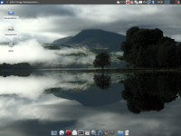 | Version: | Ubuntu 12.04 | ||
| Thema: | (Standard) | |||
| Icons: | gnome-colors | |||
| Wallpaper: | Bala Lake | |||
| Anwendungen: | Standard-Leiste (unten), im Panel: Wetterbericht, Opera, Parcellite | |||
| Anleitung: | - | |||
| 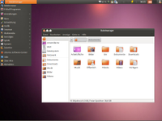 | Version: | Ubuntu 12.04 | ||
| Thema: | Ambiance Xfce | |||
| Icons: | Humanity | |||
| Wallpaper: | Ubuntu 10.04 | |||
| Anwendungen: | im Panel: Wetterbericht, DeaDBeeF, Parcellite, Jupiter | |||
| Anleitung: | - | |||
| 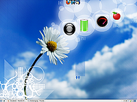 | Version: | Ubuntu 9.10 | ||
| Thema: | XCFE-Winter (Standard-Theme) | |||
| Icons: | Elementary Xubuntu (Standard) | |||
| Wallpaper: | WhiteReflections | |||
| Anwendungen: | Desktop mit Cairo-Dock und Cairo-Dock-Desklets sowie der Standard-Leiste (unten) | |||
| Anleitung: | - | |||
| 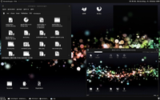 | Version: | Ubuntu 9.04 | ||
| Thema: | Cole | |||
| Icons: | Reflektion (Mix aus Eclipse , WhiteReflections und eigenen) | |||
| Wallpaper: | (URL nicht mehr auffindbar) | |||
| Anwendungen: | Thunar - Bash - Feh | |||
| Anleitung: | - | |||
| 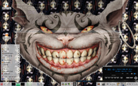 | Version: | Ubuntu 8.10 | ||
| Thema: | unbekannt | |||
| Icons: | Human | |||
| Wallpaper: | Eine Collage aus dem Kopf der Grinsekatze sowie vielmals der Kopf von Alcie aus dem Spiel "American McGees Alice"; http://users.fbihome.de/~urbanneck/pub/AMGAlice_wp_23628.jpg ; original-URL nicht mehr auffindbar | |||
| Anwendungen: | Menü (Rechter Mausklick auf Hintergrund; über "Arbeitsoberfläche" im Einstellungsmanager einstellbar - Audacious - Yakuake - Devil's Pie zum Sortieren der Fenster auf die einzelnen Desktops | |||
| Anleitung: | die Panels: Einfach "Leiste einrichten" im Leisten-Menü, notfalls Leisten hinzufügen (oberstes Feld), Größe einstellen pro Leiste, Fixe Position, normale Breite. Hab das so bisher nur unter Xfce hinbekommen, und liebe es seit Jahren. | |||
| 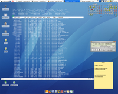 | Version: | Ubuntu 8.04 | ||
| Thema: | OSX-Tiger (GTK2), Carbon (Fenster-Dekoration) | |||
| Icons: | Mac4Lin | |||
| Wallpaper: | Mac4Lin | |||
| Anwendungen: | (im Uhrzeigersinn) BOINC - Wetter Applet - StarDict - Rainlendar - XMMS - Xpad - wbar (Dock) - Firefox - transparentes Terminal | |||
| Anleitung: | - | |||
| 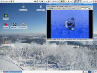 | Version: | Ubuntu 7.10 | ||
| Thema: | MacOS-X Aqua-Theme | |||
| Icons: | XubuntuStudio | |||
| Wallpaper: | Foto vom Fichtelberg aus fotografiert (keine URL verfügbar) | |||
| Anwendungen: | IrfanView unter Wine | |||
| Anleitung: | - | |||
| 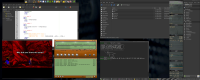 | Version: | Ubuntu 7.10 | ||
| Thema: | Murrina-Black (Window-Border: Totem) | |||
| Icons: | Iris | |||
| Mauszeiger: | PolarGreen (nicht abgebildet) | |||
| Wallpaper: | Polymer by Adrian Fez (keine URL verfügbar) | |||
| Anwendungen: | Geany - ScummVM - XMMS - Thunar - Terminal - GKrellM - Pidgin | |||
| Anleitung: | - | |||
| 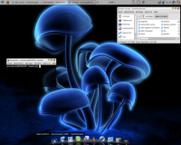 | Version: | Ubuntu 7.10 | ||
| Thema: | T-ish for Emerald & T-ish Ubuntulooks v3.2 für GTK2.x (modifiziert) | |||
| Icons: | OSX v3.3 | |||
| Wallpaper: | Fluorescence | |||
| Anwendungen: | Terminal - Thunar | |||
| Anleitung: | Die Leiste unten ist der Avant Window Navigator | |||
| 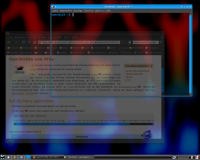 | Version: | Ubuntu 7.10 | ||
| Thema: | Ubuntu Studio Feisty Fawn | |||
| Icons: | unbekannt | |||
| Wallpaper: | Ubuntu Studio Gutsy Gibbon | |||
| Anwendungen: | Firefox - Terminal | |||
| Anleitung: | - | |||
| 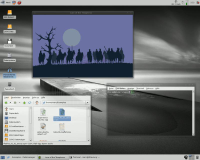 | Version: | Ubuntu 7.10 | ||
| Thema: | unbekannt | |||
| Icons: | OSX v3.3 | |||
| Wallpaper: | Pier.jpg (keine URL verfügbar) | |||
| Anwendungen: | Thunar - ScummVM - Terminal | |||
| Anleitung: | - | |||
{kind=link}
| << zurück |
- Erstellt mit Inyoka
-
 2004 – 2017 ubuntuusers.de • Einige Rechte vorbehalten
2004 – 2017 ubuntuusers.de • Einige Rechte vorbehalten
Lizenz • Kontakt • Datenschutz • Impressum • Serverstatus -
Serverhousing gespendet von